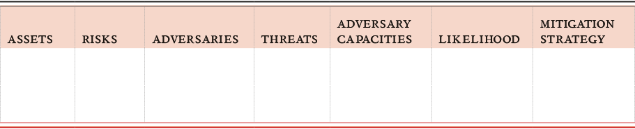

Designing a Project
Designing Responsible Projects


Designing responsible projects
Rapid changes in the way that information functions in development programming demands a careful consideration of responsible data challenges and practices. This requires engagement and input from all various expertise and perspectives across project teams, but will be the most efficient and impactful if addressed in project design. Here follow a few tips to help you get started on the right path.
Baking ‘responsible data’ into your project design: where to start?
Project design can, if done well, translate seemingly ‘fluffy’ principles into tangible, concrete steps and activities. It can help narrow down a possibly bewildering array of tools and techniques into those best suited for achieving responsible outcomes, and set the scene for how you and your colleagues and partners will interact with data.
Here are some top tips to help you get your responsible design hat on.
-
Don’t design alone:
Think carefully about who needs to be in the room, and engage the various stakeholders or experts as soon as possible (eg. it’s usually a bad idea to bring specialists like techies or lawyers into planning processes after essential components have already been decided and can no longer be refined). Make sure that if you’re asking people for their input, there is still space to incorporate said input into the project. Otherwise, you’re wasting everyone’s time.
-
Plan ahead:
Map the lifecycle of the relevant project or system - it might change, but it’s good to have a starting point.
-
Keep a timeline in mind:
Consider what a reasonable timespan might be- how long do you want to future proof the practice or the system for? Be realistic here: it’s impossible to know what’s around the corner, but there are things you can do.
-
Factor in data:
Fill in the points when data may be relevant in this lifecycle and what the design implications are
-
Wait…why data?:
Think through the options for how data can be handled or processed at each point, and - importantly - consider alternatives to the obvious or usual way of doing things before deciding it is in fact the best approach
-
Get permission:
Consider what permissions, consents, policies or principles might dictate or affect the handling of data and the ability of end users to make informed decisions
-
Plan for failure:
Build in backstops, contingency and emergency plans for when things go horribly wrong (including a resource list for troubleshooting issues)
-
Budget what you need:
Ensure that the financial budgeting and the allocation of human resources are “fit for purpose” and adequate to achieve all of these objectives
-
Check yourself:
Give yourself opportunities for monitoring and calibrating, and don’t wait for the project to be shut down before learning lessons and parsing failures. Periodically check whether you are staying true to the responsible data standards and ethical framework that you set for yourself up front.
-
Document the process:
Track both the small and big picture approach to have a clear, organisational baseline that can be relied upon as people come and go and the project evolves. This will also make it much easier for you to draw out lessons learned from the project.
Don’t panic, plan: assessing risks and threats
When working with data, there are many things that can go wrong, but that does not mean they actually will, or that the consequences will be catastrophic. Taking the time to do a risk assessment can save you a lot of time, and save you from future panics! It will help you identify what is likely and what is consequential, and thereby come up with a rational response. By carrying out a risk assessment, you’ll preemptively come up with a number of preventative measures, as well as a back up plan to limit potential harm.
This section focuses on risk assessment practices specifically with regards to data, beyond digital and physical security risks, to include questions about the social impacts of data collection and publication, or how data can be reused towards objectionable ends. This does not, however, remove the need for a risk assessment to also be conducted for the entire environment of the project as part of standard planning.
Threat Modelling
Threat modelling is a type of risk assessment and part of a broader risk assessment framework. It is a useful process to help uncover specific threats to existing assets. To conduct a threat modelling exercise, discuss the following issues and identify how they manifest themselves for your project. (See the matrix template below these definitions).
Assets
These are the types of data that the project will create or use (for examples of different types of data, see the introductory chapter, Are you Working With Data?). What data is being created? Where does the data exist and how do you interact with it? Map the types of data and the data flow. Does the data fall into clusters, such as public, internal, or confidential? If so, this already gives you a clue that different procedures may be needed for different types of data. (See section: Sharing Data)
Risks
These are the vulnerabilities identified in the data flow, including access, sharing, storage and management of the various types of data.
Adversaries
There are individuals and groups that may be interested in making the threats to your assets a reality. In other terms, they are the ones who you are up against.
Research their capabilities, but don’t let fear take over: when you know who they are, you will already have a clear idea of what you can do to stop malicious action. Also, do not forget that “adversaries” may be internal: the disgruntled former employee who goes rogue, or the lazy systems administrator who forgets to do the backup.
Threats
These are potential risks to your assets, to people or to the project. Threats to data assets can often be grouped into three generic categories: (a) loss, (b) illegitimate access, (c) manipulation. Threats to people can be sorted according to: (a) direct harm and (b) social effects. Threats to the project generally have to do with (a) sustainability and efficiency or (b) reputations and relationships. These generic categories can be made a lot more concrete for your given project, so use them as a guide, not an exhaustive list. Map out potential threats, paying specific attention to who or what you are working with. Remember that not all threats have adversaries or malicious intent.
Likelihood
What are the chances that the above threats become real? Put differently, what is more probable to happen: an unidentified hacker who breaks into your highly secured systems only to prove a point, or you forgetting to budget for data hosting after the end of the project period?
Mitigation Strategy
Responsible data practices also require safety planning. This identifies actions you can take to address the threats. Questions that may help formulate your plan include:
What risks can be eliminated entirely and how? Based on their likelihood and significance, which risks should be addressed first? How can risks be reduced or better managed? It is assumed that practitioners and managers won’t be able to address all threats at once. They should be prepared to schedule work on project risk assessment and safety planning, alongside project design, implementation, and monitoring and evaluation activities.
The threat model can be organized into a matrix such as this:

Writing these out, and thinking them through at the very start will help you to consider whether you have the resources you need to prevent the most probable risks, as well as the most consequential threats. It also helps you to work out your priorities and how you can meet the most urgent tasks, while being aware of disaster scenarios that might be catastrophic, but are less likely to occur.
Feed your findings back into your project lifecycle diagram. Does this leave any critical gaps? Do you need additional resources? Should you reconsider the project in its entirety? Asking these questions will help you focus on finding the right responses.
Clearly, you can’t ‘prioritise’ or focus on every single scenario here: each organisation will have its own sense of whether it makes sense to focus on the more probable and less disastrous scenarios, or the less likely but potentially catastrophic ones. It may also help to develop a strategy for weighing different scenarios and allocating organizational resources accordingly. Either way, being aware of the spectrum of risks can help to arrive at a position and strategy that is tailored to your project’s particular context.
Some risks are more avoidable than others. Data loss is a common and highly avoidable harm. Regular systems for back up are both accessible and affordable, and represents a type of basic data awareness that projects should review even in low-threat environments.
Contingency planning
Prevention is only half of what you can do. There will always be residual risk and threats you cannot foresee. This is why it is important to prepare for incidents to happen, so you can contain them or mitigate their impact.
-
Talk through the different kinds of risks, and make sure there is a clear, step-by-step plan of action to highlight incidents to the relevant people within the organisation if or when they happen.
-
Encourage a culture of openness and learning from mistakes, not blame; reporting incidents within your project team should be seen as a positive, not a negative.
-
Stress that the consequences of covering up or hiding in-house mistakes will always be much more serious than coming clean: mistakes happen, and it’s good to learn from them.
-
Keep a list of people to call in times of emergency in areas in which you lack internal expertise - for example, lawyers, crisis communications, data forensics. Building those connections before you really need them will save you time if/when a crisis hits.
-
For all projects, have an emergency plan of action to prepare for immediate shutdown or project termination.
External Providers
Relying on external providers is often a necessity. It may actually be desirable to work with someone who is an expert in what they are doing, rather than spending your time on learning something that is hard to master and is outside of your core skills. However, ask yourself to what extent you can trust them, what mechanisms are available to you to verify this trust, and what you need to know to evaluate what they are doing. If you’re hiring external consultants to work directly with vulnerable populations to collect data, for example, make sure they come with strong references, or from within your trusted network.
Consider the option of independent audits or external references from organisations that you do trust, too, as well as the role of such providers over time, and establish safety mechanisms in case they become unavailable or their position or reliability changes.
Holistic Security
This is a way of thinking of all of the various security threats or risks that are faced: digital information security, physical and operational security, and psycho-social well being required for good security implementation. All three of these should be considered within technology projects, not just digital security, and there are many strong tools and support organisations who can help conduct security assessments. See Further Resources for a list of organisations working in this space. On the topic of holistic security, Tactical Technology Collective have put together a note with further discussion.
Budgeting. Do we have a line item for that? Oops….
Sometimes, treating data responsibly in your project will cost money and resources. If it’s too late to include responsible data considerations in the budget, you will be in the awkward (and potentially dangerous) position of deciding whether or not to be responsible; this could mean compromising on other goals, or coming up with makeshift approaches that may be unsustainable. Plan ahead for those budget lines that often are easily forgotten.
Technology
Which technologies do you plan to use? Work out what you need before choosing a platform: be sure it has the functionality you need (or, if open source, that you can customise it accordingly) to grow along with your program and that you have budgeted for development, testing, maintenance and support. What will be the cost of using/replacing your technology in 1 year? 3 years? 5 years?
Does this technology meet your responsible data needs in terms of accessibility and security? Is the technology appropriate for the people who should be able to access it in terms of culture, literacy and media access? No technology is ever 100% secure, but technology that has been independently audited will have fewer vulnerabilities than non-audited counterparts. If your data is very sensitive, it may be more responsible to audit software before using it. This costs money, so ensure to budget for it.
Support
Whenever you are relying on an external provider, especially for hosting or software, you will need support. There may be things that don’t work, and there will be things that you only realise you will need after using a system for a longer time. Make sure that this support is covered in the agreement with your provider, or negotiate a support package included in the budget. Ensure that service levels and response times are appropriate for your way of working (eg. a 9-5pm solution for the UK may not be ideal if you are a real time crisis mapping organisation with a global footprint.)
Failing to think about these things in advance brings the risk that you will be running a system that you have considerable second-thoughts or grievances about, just because you cannot pay your provider more. As a business, they may well be unable to provide this support on a pro-bono basis, no matter how urgent or critical the need. Be sure to request non-standard packages that work for you; most providers offer non-profit rates and/or are able to support a fair price especially if their wider pool of customers can benefit from the tweaks or system improvements from your feedback and advice.
CASE STUDY: Vendor Abandonment or Planning for Emergency Data Migration
An NGO has an internal policy of using free and open-source applications for data collection, mainly because of the accessibility factor (low/no cost). Many of this NGO’s projects have invested in using this application to design their project workflows, and have stored large amounts of data on the application server. The group who created the application decided to abandon the work for a new venture and the existing application was left unsupported. This resulted in the NGO losing access to their data for over a month during an emergency. Beneficiaries who had come to depend on the NGO’s projects were left without service provision during a time of crisis. If the lack of vendor support was identified in the risk assessment, it’s possible emergency/contingency planning could have allowed for a quicker recovery (e.g. emergency data migration) from this unfortunate situation.
Hosting and Data Storage
Storing and hosting your data does not come for free and it is important to consider the cost over time in relation to how your programme may grow (look beyond year 1). Try not to take the inexpensive option simply because it is tempting to get hosting for 5 USD per month, although there may be instances where this is totally fine. Make sure your hosting is suitable for your needs, that is it is hosted with a provider you can trust or with competent systems administrators within your organisation. That usually means you will have a reliable backup system, regular monitoring of logs and swift updates of software to fix known security holes.
Skills and Training
Making sure that the people in your organisation have the skills they need is an essential, though often ignored, part of a project. This involves identifying the skills that need to be associated with specific people and specific roles, but also ensuring that no mission-critical skills are siloed with one particular ‘expert’ on a topic - what happens if they leave?
-
Do staff need security awareness training before setting out on data collection?
-
Do your project managers have adequate data literacy skills?
-
What do technical staff need to know about the communities you are working with, for example when designing the technical infrastructure you’ll be using?
-
Addressing these kinds of questions when designing a project can help to enable appropriate responses to responsible data challenges, as well as generally ensure project sustainability and professional development for supporting staff.
-
Ongoing training can also be an important investment, to manage the risks posed by staff turnover and changing contexts.
Backup Planning and Emergency Support
Even with the very best planning, emergency situations may arise that will need immediate response and support. Though it’s impossible to plan for everything, leaving some budget for these emergencies will enable your team to be more resilient. There is an almost never-ending range of emergency situations to consider for your project, of which examples might include:
-
recently changed threatening legislation
-
government crackdowns
-
violent acts and injury
-
imprisonment
-
loss of equipment
-
vendor abandonment
Responding to these unexpected challenges might require many different kinds of resources, from external advocacy support, to emergency medical funds, litigation and legal support, increased security funds, or tool replacement funds. It is important to remember that these situations are usually extremely time sensitive and turn-around time will need to be as quick as possible; financial bottlenecks should be reduced to a minimum.
Quality and Integrity Assurance
Trust is important, but sometimes you will need to verify that best practices are being followed. At what stages in your project do you need to assure the quality of the work being done, in order to not let any irresponsible habits slip in? This can happen at the data collection stage (especially if you rely on interns, volunteers or short-term contractors), during data migrations and verification, or when data is analysed. Better safe than sorry, so factor in time and human resources to avoid unpleasant surprises when it is too late and the consequences are real, not theoretical.
Project Termination
Data-driven or data-supported projects beg one important question: what happens to the data when the project ends? Does the data have an expiry date? Where will it be archived? Might users ask for copies of their data? If so, are you in a position to provide it, both financially and in terms of process? Make sure you plan in advance and have the appropriate budget to terminate the data, or to migrate it internally or to external partners as is appropriate.